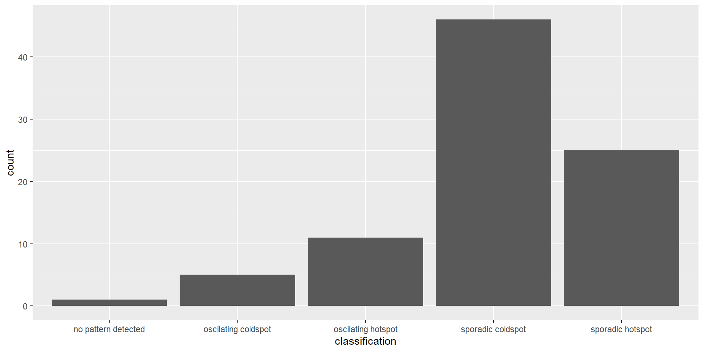
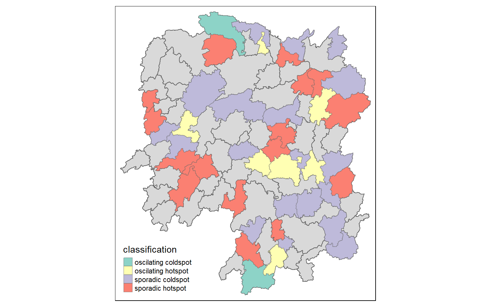

pacman::p_load(sf, sfdep, tmap, plotly, tidyverse)In-class Exercise 6
6 Overview
Emerging Hot Spot Analysis (EHSA) is a spatio-temporal analysis method for revealing and describing how hot spot and cold spot areas evolve over time. The analysis consist of four main steps:
- Building the space-time cube ,
- Usind data to perform Getis-Ord local Gi* statistic for each bin by using an FDR correction,
- Evaluating hot and cold spot trends by using Mann-Kendall trend test,
- Categorising each study area location based on the z-score and p-value for each location with data, and with the hot spot z-score and p-value for each bin. Sieving away those that do not conform to the significance level.
6.1 Getting started
6.1.1 Installing and Loading the R Packages
6.2 The Data
- Hunan, a geospatial data set in ESRI shapefile format, and
- Hunan_GDPPC, an attribute data set in csv format.
6.3 Importing geospatial data
In the code chunk below, st_read() of sf package is used to import Hunan shapefile into R.
hunan <- st_read(dsn = "data/geospatial",
layer = "Hunan")Reading layer `Hunan' from data source
`C:\zjho008\ISSS626-GAA\In-class_Ex\In-class_Ex06\data\geospatial'
using driver `ESRI Shapefile'
Simple feature collection with 88 features and 7 fields
Geometry type: POLYGON
Dimension: XY
Bounding box: xmin: 108.7831 ymin: 24.6342 xmax: 114.2544 ymax: 30.12812
Geodetic CRS: WGS 846.4 Importing attribute table
In the code chunk below, read_csv() of readr is used to import Hunan_GDPPC.csv into R.
GDPPC <- read_csv("data/aspatial/Hunan_GDPPC.csv")Rows: 1496 Columns: 3
── Column specification ────────────────────────────────────────────────────────
Delimiter: ","
chr (1): County
dbl (2): Year, GDPPC
ℹ Use `spec()` to retrieve the full column specification for this data.
ℹ Specify the column types or set `show_col_types = FALSE` to quiet this message.6.5 Creating a Time Series Cube
spacetime and spacetime cubes illustrates the basic concept of spatio-temporal cube and its implementation in sfdep package.
Spacetime cube is useful for fixed administrative boundary, planning area, planing subzone etc but not applicable for dynamic space events such as forest areas, flooding for instance.
In the code chunk below, spacetime() of sfdep is used to create a spatio-temporal cube.
GDPPC_st <- spacetime(GDPPC, hunan, # two data files: spatial and attribute
.loc_col = "County", # indicating which field is spatial
.time_col = "Year") # indicating which field is the attribute
Note
Original time/date field cannot be used as it is in continuous form Hence, date has to be converted to integer or to drop away the time to have a continuous Day/Month/Year indicators.
Next, is_spacetime_cube() of sfdep package which will be used to verify if GDPPC_st is indeed a space-time cube object.
is_spacetime_cube(GDPPC_st)[1] TRUEThe TRUE return confirms that GDPPC_st object is indeed an time-space cube.
6.6 Computing Gi*
In this section we will compute the local Gi* statistics.
GDPPC_nb <- GDPPC_st %>%
activate("geometry") %>% # to use the geometric layer and exclude the attributes; this line is needed before computing the weight matrix
mutate(nb = include_self(st_contiguity(geometry)), # include_self function
# parsing tp calculate the spatial weight - using mutate to attain the two columns
wt = st_inverse_distance(nb, geometry,
scale = 1,
alpha = 1), # extra parameters to emphasise distance decay
.before = 1) %>%
set_nbs("nb") %>% # for the data to be arranged in time-sequence
set_wts("wt")! Polygon provided. Using point on surface.Warning: There was 1 warning in `stopifnot()`.
ℹ In argument: `wt = st_inverse_distance(nb, geometry, scale = 1, alpha = 1)`.
Caused by warning in `st_point_on_surface.sfc()`:
! st_point_on_surface may not give correct results for longitude/latitude dataSorting should not be done after time-space cube is calculated
Note that this dataset now has neighbours and weights for each time-slice.
Using head() function
head(GDPPC_nb)spacetime ────Context:`data`88 locations `County`17 time periods `Year`── data context ────────────────────────────────────────────────────────────────# A tibble: 6 × 5
Year County GDPPC nb wt
<dbl> <chr> <dbl> <list> <list>
1 2005 Anxiang 8184 <int [6]> <dbl [6]>
2 2005 Hanshou 6560 <int [6]> <dbl [6]>
3 2005 Jinshi 9956 <int [5]> <dbl [5]>
4 2005 Li 8394 <int [5]> <dbl [5]>
5 2005 Linli 8850 <int [5]> <dbl [5]>
6 2005 Shimen 9244 <int [6]> <dbl [6]>6.7 Computing Gi*
Now to utilise th new columns to manually calculate the local Gi* for each location. We can do this by grouping by Year and using local_gstar_perm() of sfdep package.
After which, we use unnest() to unnest gi_star column of the newly created gi_starts data.frame.
gi_stars <- GDPPC_nb %>%
group_by(Year) %>%
mutate(gi_star = local_gstar_perm(
GDPPC, nb, wt)) %>%
tidyr::unnest(gi_star)6.8 Mann-Kendall Test
To perform confirmatory analysis whether there is a monotonic (meaning there is no trend) or no monotonic trend
With Gi* measures calculated the next step is to evaluate each location for a trend using the Mann-Kendall test. The code chunk below uses the Changsha county.
cbg <- gi_stars %>%
ungroup() %>% # since it is a 'cube' to filter away the other county
filter(County == "Changsha") |>
select(County, Year, gi_star)Plotting the result by using ggplot2 functions.
ggplot(data = cbg,
aes(x = Year,
y = gi_star)) +
geom_line() +
theme_light()
From the plot, we can are unable to interpret much as it is static.
6.8.1 Interacitve Mann-Kendall Plot
Creating an interactive plot by using ggplotly() of plotly package.
p <- ggplot(data = cbg,
aes(x = Year,
y = gi_star)) +
geom_line() +
theme_light()
ggplotly(p)For such a test it is advisable to have at least 10 years of data.
6.8.2 Mann-Kendall Test
Reject the null-hypothesis null if the p-value is smaller than the alpha value (i.e. 1-confidence level)
6.8.3 Printing Mann-Kendall Test Report
Kendall package is a special package to run this calculation
cbg %>%
summarise(mk = list(
unclass(
Kendall::MannKendall(gi_star)))) %>%
tidyr::unnest_wider(mk) # to generate the report# A tibble: 1 × 5
tau sl S D varS
<dbl> <dbl> <dbl> <dbl> <dbl>
1 0.485 0.00742 66 136. 589.In the above result, sl is the p-value. This result tells us that there is a slight upward but insignificant trend.
To attain the p-values for some of which are closer or further away from one.
strong close to 1
6.8.4 Mann-Kendall test data.frame
We can replicate this for each location by using group_by() of dplyr package.
ehsa <- gi_stars %>%
group_by(County) %>%
summarise(mk = list(
unclass(
Kendall::MannKendall(gi_star)))) %>%
tidyr::unnest_wider(mk)head(ehsa)# A tibble: 6 × 6
County tau sl S D varS
<chr> <dbl> <dbl> <dbl> <dbl> <dbl>
1 Anhua 0.191 0.303 26 136. 589.
2 Anren -0.294 0.108 -40 136. 589.
3 Anxiang 0 1 0 136. 589.
4 Baojing -0.691 0.000128 -94 136. 589.
5 Chaling -0.0882 0.650 -12 136. 589.
6 Changning -0.750 0.0000318 -102 136. 589.6.8.5 Mann-Kendall test data.frame
We can also sort to show significant emerging hot/cold spots
emerging <- ehsa %>%
arrange(sl, abs(tau)) %>%
slice(1:10)
head(emerging)# A tibble: 6 × 6
County tau sl S D varS
<chr> <dbl> <dbl> <dbl> <dbl> <dbl>
1 Shuangfeng 0.868 0.00000143 118 136. 589.
2 Xiangtan 0.868 0.00000143 118 136. 589.
3 Xiangxiang 0.868 0.00000143 118 136. 589.
4 Chengbu -0.824 0.00000482 -112 136. 589.
5 Dongan -0.824 0.00000482 -112 136. 589.
6 Wugang -0.809 0.00000712 -110 136. 589.6.9 Performing Emerging Hotspot Analysis (To confirm on the classification )
Lastly, we will perform EHSA analysis by using emerging_hotspot_analysis() of sfdep package.
It takes a spacetime object x (i.e. GDPPC_st), and the quoted name of the variable of interest (i.e. GDPPC) for .var argument. The k argument is used to specify the number of time lags which is set to 1 by default. Lastly, nsim map numbers of simulation to be performed.
ehsa <- emerging_hotspot_analysis(
x = GDPPC_st,
.var = "GDPPC",
k = 1,
nsim = 99 #no of simulations is 100
)6.9.1 Visualising the distribution of EHSA classes
In the code chunk below, ggplot2 functions are used to reveal the distribution of EHSA classes using a bar chart.
ggplot(data = ehsa,
aes(x = classification)) +
geom_bar()
The bar chart above shows that sporadic cold spots class has the highest number of counties.
Note that the p-value is calculated here and some of them are not statistically significant despite the representation of the bar chart.
6.9.2 Visualising EHSA
In this section, it illustrates how to visualise the geographic distribution EHSA classes. However, before we can do so, we need to join both hunan and ehsa together by using the code chunk below.
hunan_ehsa <- hunan %>%
left_join(ehsa,
by = join_by(County == location))tmap functions are used to plot a categorical choropleth map by using the code chunk below:
Code
ehsa_sig <- hunan_ehsa %>%
filter(p_value < 0.05)
tmap_mode("plot")tmap mode set to plottingCode
tm_shape(hunan_ehsa) +
tm_polygons() +
tm_borders(alpha = 0.5) +
tm_shape(ehsa_sig) +
tm_fill("classification") +
tm_borders(alpha = 0.4)Warning: One tm layer group has duplicated layer types, which are omitted. To
draw multiple layers of the same type, use multiple layer groups (i.e. specify
tm_shape prior to each of them).
We can backtrack to cbg whether it is an oscillating hotspot and compare with the chart.